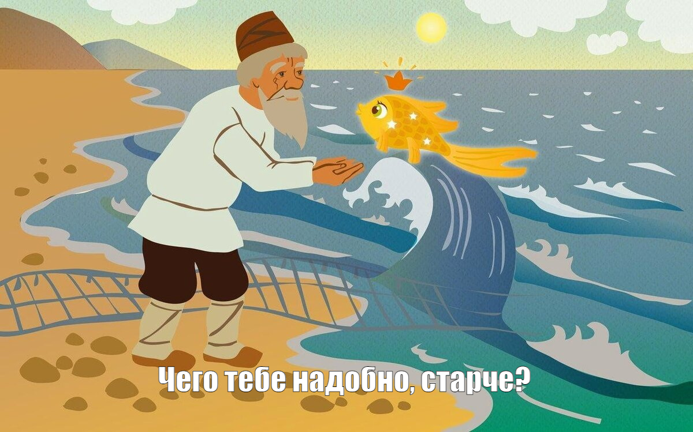

:
:
На следующей странице, GitHub робко спрашивает вас — А чего ты больше всего хочешь прямо сейчас?
Если перевести английские слова с этой страницы чуть правильнее, то GitHub спрашивает вас —
Какие именно фишки нашего ресурса вам было бы интереснее всего использовать?
:
Картинка
И, соответственно, предлагает отметить нужные нам фишки checkbox-ами.
Если внимательно посмотреть на эти checkbox-ы, то тут вам:
Полезные ли это штуки? Конечно полезные! Понадобятся они нам в будущем? Ну, ясен пень, понадобятся! Но...
Но мы то с вами, воспитанные на Александре, нашем, Сергеиче, буквально с первого класса, его вот этим —
И днем и ночью кот ученый...
И до одиннадцатого класса, где вот то, вот самое —
Я думал: вольность и покой замена счастью. Боже мой! Как я ошибся, как наказан...
Понимаем, что это совершенно иезуитский вопрос!
И его не надо переводить Google Translate-ом!
Потому что он не звучит так, как мы его перевели раньше —
Какие именно фишки нашего ресурса вам было бы интереснее всего использовать?
Он звучит вот так:
А для того, чтобы разобраться почему это так, причем здесь золотая рыбка, и что вообще происходит,
не нужно читать текст с предыдущей картинки!
Нужно читать текст, который чуть ниже и мелким шрифтом
:
Картинка
Без всякого Google Translate-а его можно перевести примерно вот так:
Нащелкай кнопочек, а мы из этого подберем для тебя тарифный план!
И вот теперь, можно разбираться. И разберемся мы очень быстро и тезисно:
Ну абсолютно бесплатно! Картинка
Но...
У GitHub-a есть платные тарифные планы .
Именно их он вам и предлагает на этой странице .
При этом, как вы видите, он не предлагает себя купить напрямую.
Он просто говорит —
Давай посмотрим, чем ты вообще интересуешься,
и может быть что-нибудь полезное для твоих интересов я смогу тебе продать...
И, поверьте, он сможет
Картинка
Кстати, да, мы забыли ответить на главный вопрос — Причем здесь золотая рыбка?
Закончи
В итоге, вывод простой:
Ничего на этой странице не выбирайте!
Лишь, как рыбка, хвостиком махните, и вперед — к следующему шагу .